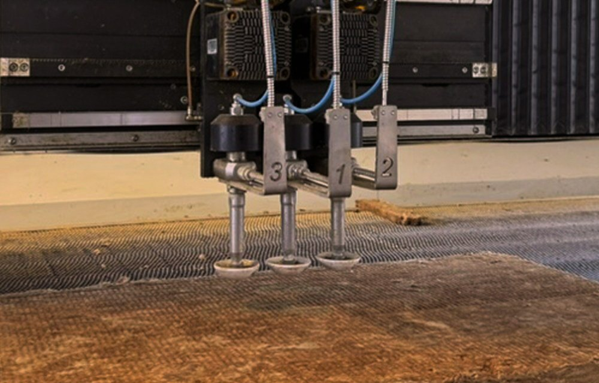

Saonara (PD) · ISO 9001 dal 2004
Isolanti termoacustici Termici, acustici e antifuoco, per industria, edilizia e navale. Magazzino e taglio su misura a Saonara (PD).
Dal lunedì al venerdì Lunedì-venerdì 8.30-12.30 e 14.00-18.00. Gli ordini si fanno per scritto. Via Emilia Romagna 19, 35020 Saonara (PD)
Cercate un prodotto?
Marche a magazzino: , , , , , ; deposito .
- Materiale a stockPer il listino aggiornato telefonate o scrivete.
- Taglio su misura in casaLana di roccia e di vetro, elastomero, nanotecnologici.
- Consegne con mezzi propriA sponda camion, su automezzi di circa 10 m. Niente corrieri espressi.
- Più di cinquant'anniCertificati UNI EN ISO 9001 dal 2004, da RINA.
Catalogo
Otto famiglie, a stock
Coppelle, feltri, pannelli, lastre e tubi, nastri e colle: 251 schede a catalogo, ognuna con la scheda tecnica del produttore.
- 01
Lana di roccia
Coppelle, pannelli, feltri e sfusa.
Le schede - 02
Lana di vetro
Coppelle, pannelli, feltri e sfusa.
Le schede - 03
Elastomero espanso
Lastre, tubi, K-Fonik, Solar e Duct.
Le schede - 04
Isolanti nanotecnologici
Aerogel, per problemi di spazio e prestazioni eccezionali.
Le schede - 05
Protezione al fuoco
Pannelli, feltri e coppelle: calcio silicato, lana di roccia, Tecnofire REI 120.
Le schede - 06
Fonoisolanti
Dove il rumore non passa: piramidale, bugnato, accoppiati con massa.
Le schede - 07
Rivestimenti
Lamierini, alluminio calandrato, tessuti di vetro.
Le schede - 08
Accessori
Nastri in alluminio, colle, punteruoli e chiodi, terminali.
Le schede

- Materiali
- Lana di roccia, lana di vetro, elastomero espanso, prodotti nanotecnologici.
- Cosa indicare
- Materiale o temperatura di esercizio, spessore, misure o disegno quotato in allegato, quantità, data richiesta.
Pezzi su misura
Mandateci il disegno, lo tagliamo in casa
Un'esperienza ventennale nella produzione di pezzi su misura: insonorizzazione di macchinari, isolamento termico di forni, condizionatori, cisterne o tubi di scarico.
«Rapidi nei tempi di produzione, competitivi nelle quotazioni economiche e riservati sulla progettazione dei clienti.»
Consegne e ordini
Materiale a stock, consegne con mezzi propri
«La grande quantità di materiale presenti a stock e l'immediatezza nelle consegne, effettuate il più delle volte con propri mezzi».
Camion di circa 10 m
Dove è possibile si consegna con i mezzi grandi, con preavviso telefonico un giorno prima. Nelle strade strette la merce passa al deposito di zona, che consegna con furgoni.
A piano strada
Sponda camion, nel punto più vicino all'ingresso dove l'automezzo può sostare. Un solo autista, senza aiuto per lo scarico.
Niente corrieri espressi
Non sono adatti agli ingombranti. Dal ritiro in magazzino alla consegna passano da 1 a 7 giorni.
Porto franco
Merce assicurata, spese di spedizione in fattura. Se un prodotto non è disponibile entro un mese dall'ordine, vi avvisiamo.
Gli ordini si fanno per scritto
Telefonate o scrivete per avere il listino aggiornato; l'ordine mandatelo per email.
Settori
Ogni applicazione ha le sue esigenze
Vi aiutiamo a individuare la soluzione più adatta: per coibentatori, impiantisti, imprese edili e cantieri navali.
-
Industria
Dalla lana di roccia alla fibra di vetro per alte temperature, dall'alluminio calandrato ai refrattari.
-
Edilizia
Lana di vetro, elastomero espanso, canne fumarie, accessori.
-
Navale
Coppelle di vetro certificate RINA, cuscini REI 120, tutto quello che serve per l'installazione navale.
Una storia lunga più di cinquant'anni
- 50+anni di storia
- 2004UNI EN ISO 9001, certificati da RINA
- 251schede prodotto a catalogo, con la scheda tecnica
- 11dipendenti in azienda
Certificazioni e associazioni
- UNI EN ISO 9001RINA n. 10957/04/S, dal 18.05.2004, valido fino al 15.05.2028. Il certificato (PDF)
- EcoVadisMedaglia di bronzo.
- ANICTAAssociato partecipante, la categoria dei fornitori dei coibentatori.
- EIIFMembro (European Industrial Insulation Foundation).
- Politica della qualitàIl documento (PDF)
Partner e marchio Termit
- Knauf InsulationLana di roccia
- UrsaLana di vetro
- K-FlexElastomero espanso
- Unifrax, MorganLana di vetro per alte temperature
- CoroplastNastri adesivi, PVC
- Dörken DeltaMembrane e teli: siamo deposito, tutta la gamma a stock
- Termit Isolbag 039Il nostro feltro e pannello imbustato, λD 0,039 W/mK
Contatti
Telefonate o scrivete
049 640060- info@termit.biz
- Magazzino e uffici
- Via Emilia Romagna 19, 35020 Saonara (PD). Come arrivare
- Orari
- Lunedì-venerdì, 8.30-12.30 e 14.00-18.00
Sabato e domenica chiuso - Ordini
- Solo per scritto, via email.